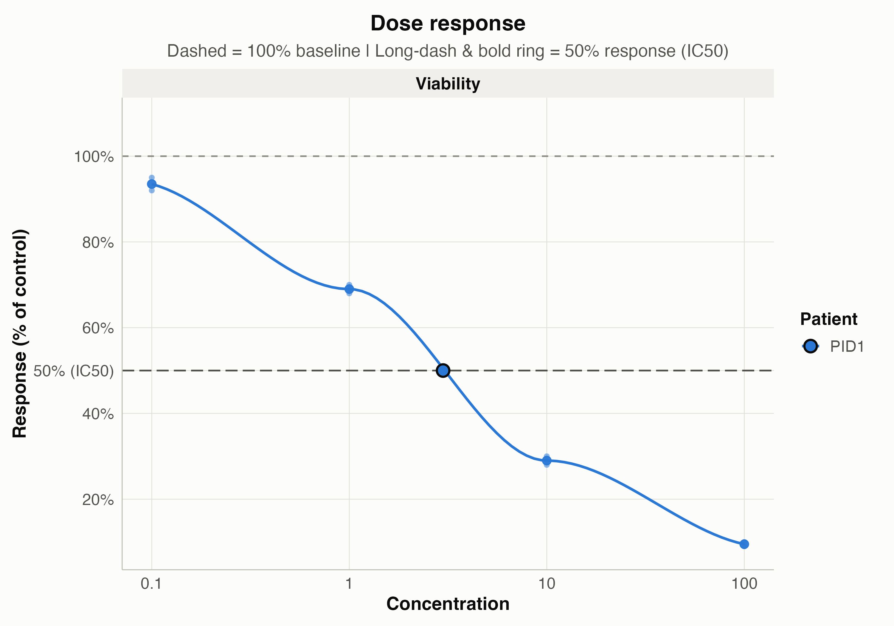
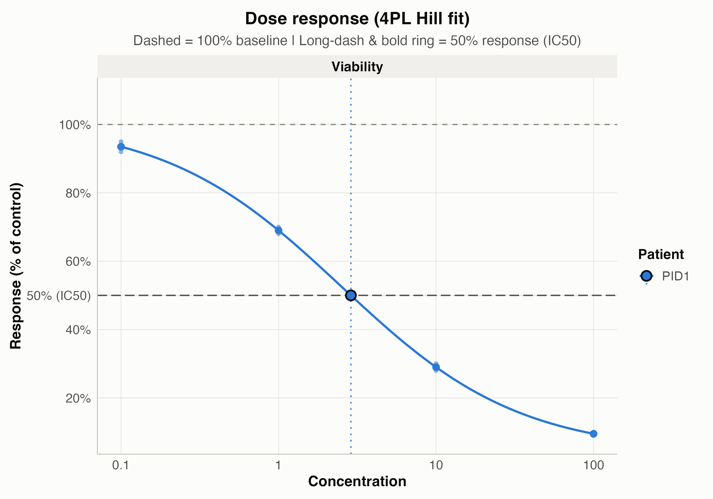

Plots percent-of-control marker values against drug concentration, the
standard dose response view for drug sensitivity assays. Expects data
that has already been processed with normalize_to_control(). Supports
non-parametric LOESS smoothing (method = "loess"), 4-parameter log-logistic
Hill curve fitting (method = "4pl"), or linear trend lines (method = "linear").
Usage
plot_dose_response(
.data,
concentration_column_name = "Concentration1",
treatment_column_name = "Treatment",
patient_column_name = "PID",
control_treatment_name = "Control",
log_scale_x = TRUE,
method = c("loess", "4pl", "linear"),
show_ic50 = FALSE,
dead_markers = NULL,
viable_markers = NULL,
total_markers = NULL,
response_metric = c("viability", "cell_death"),
selected_treatments = NULL,
consensus_only = FALSE,
consensus_dispersion = c("cv", "rcvq", "rcv_mad", "sd", "se", "iqr", "mad", "none"),
show_cv = TRUE
)Arguments
- .data
Data frame that has been through
normalize_to_control()on the long format (must contain "pct_of_control", "marker_positivity", and a concentration column).- concentration_column_name
Column holding the drug concentration. Defaults to "Concentration1".
- treatment_column_name
Column holding the treatment label. Defaults to "Treatment".
- patient_column_name
Column holding the patient ID. Defaults to "PID".
- control_treatment_name
Value identifying control/vehicle wells, excluded from the dose response curve. Defaults to "Control".
- log_scale_x
Logical, whether to plot concentration on a log10 axis (the usual view when doses span orders of magnitude). Defaults to TRUE; rows with a non-positive concentration are dropped when TRUE.
- method
Curve fitting method:
"loess"(default),"4pl"(4-parameter log-logistic Hill model estimated viastats::optim()), or"linear". When"4pl"is used, a data frame of estimatedic50,hill_slope,bottom, andtopparameters is attached asattr(plot, "ic50").- show_ic50
Logical; when
TRUEandmethod = "4pl", draws a vertical dashed reference line at the estimated IC50 concentration for each fitted curve. Defaults toFALSE.- dead_markers
Optional character vector of marker name(s) representing dead/dying cells (e.g.
"cCASP3"). If provided,normalize_to_control()is called automatically to compute the target cell response before plotting.- viable_markers
Optional character vector of marker name(s) representing viable target/cancer cells (e.g.
"EpCAM_E-Cadherin").- total_markers
Optional character vector of marker name(s) representing all target cells (e.g.
c("EpCAM_E-Cadherin", "cCASP3")).- response_metric
Metric to compute when
dead_markersis supplied:"viability"(default) or"cell_death".- selected_treatments
Optional character vector of drug treatment names to plot (e.g.
"Paclitaxel").- consensus_only
Logical; when multiple
viable_markersordead_markersare supplied,FALSE(default) plots individual panels for each marker pair plus a"Consensus Viability (Combined)"panel and attaches the consensus IC50 table asattr(plot, "consensus_ic50"). Set toTRUEto plot only the combined consensus panel.- consensus_dispersion
Coefficient of variation or dispersion metric to compute per point on the Consensus panel (attached as
attr(plot, "consensus_cv")and plotted as error bars / point labels):"cv"(standard coefficient of variation100 * SD / Mean, default),"rcvq"(robust quartile CV100 * 0.75 * IQR / Median),"rcv_mad"(robust MAD CV100 * MAD / Median),"sd"(standard deviation),"se"(standard error),"iqr"(interquartile range),"mad"(median absolute deviation), or"none". Note thatrcvqandrcv_madrequire multiple marker pairs/replicates per dose (most informative when >= 3 values per dose are available).- show_cv
Logical; whether to print the per-point CV (or selected
consensus_dispersionvalue) on the Consensus panel. Defaults toTRUE.
Value
A ggplot object (with attr(plot, "ic50"), attr(plot, "consensus_ic50"),
and attr(plot, "consensus_cv") populated).
Examples
df <- data.frame(
PID = rep("PID1", 10),
Treatment = c("Control", "Control", rep("DrugA", 8)),
Concentration1 = c(NA, NA, "0.1", "0.1", "1", "1", "10", "10", "100", "100"),
marker_positivity = "Viability",
marker_positivity_ratio = c(10, 10, 9.5, 9.2, 7.0, 6.8, 3.0, 2.8, 1.0, 0.9)
)
normalized <- normalize_to_control(df)
plot_dose_response(normalized)
#> Warning: pseudoinverse used at -1.015
#> Warning: neighborhood radius 2.015
#> Warning: reciprocal condition number 1.6665e-17
#> Warning: There are other near singularities as well. 4.0602

plot_dose_response(normalized, method = "4pl", show_ic50 = TRUE)
